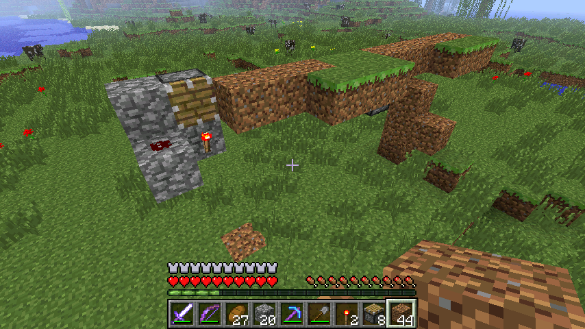

首页
上一页
98
99
100
101
102
103
103
104
105
106
107
108
下一页
末页
defanive2
无尽黑夜
14
回到生存模式
垃圾桶的电路在搞树场的时候不小心破坏了。。
现在修一下
6347楼
2012-09-15 11:11
defanive2
无尽黑夜
14
修好 = =
6349楼
2012-09-15 11:15
defanive2
无尽黑夜
14
给新版的树场加了一个门
6350楼
2012-09-15 11:18
defanive2
无尽黑夜
14
先去洗澡 = =
顺便在骷髅刷怪塔和史莱姆塔这里挂机
现在LV26了，干脆附魔完了再去造这个羊场
6355楼
2012-09-15 11:33
defanive2
无尽黑夜
14
这张是主地图上方的地图
准备把羊场建在村庄下方，靠近地图边缘的地方
村庄下方是一片草原，很适合新建建筑
而且动物很多的时候会导致游戏很卡，因此离远一点让包含大量动物的chunk不被加载就可以了
其次这样村庄，羊场，和家都在一条线上，方便以后做地铁
6362楼
2012-09-15 12:10
defanive2
无尽黑夜
14
装潢所需的白桦木板不够用了，来树场刷一堆白桦木再说
PS 虽然新型树场效率很高，但是只对苹果树和雨林树有效
因此想要针叶树和白桦树还是得用旧树场
6369楼
2012-09-15 12:17
defanive2
无尽黑夜
14
树场再次爆满。。
PS 话说我效率4的附魔斧耐久快用光了。。
6372楼
2012-09-15 12:20
defanive2
无尽黑夜
14
带上一些物资出发 = =
PS 国外访问国内网好慢，直播器用不了
怀念有直播器的时光啊
6376楼
2012-09-15 12:41
defanive2
无尽黑夜
14
最后当然不忘带上旅行必备的珍珠啦
6379楼
2012-09-15 12:43
defanive2
无尽黑夜
14
这一望无际的草原，羊场就在这里建好了
6382楼
2012-09-15 12:45
defanive2
无尽黑夜
14
不过造羊场之前，先来村庄交易
6386楼
2012-09-15 12:48
defanive2
无尽黑夜
14
继续用甘蔗坑爹村民
6388楼
2012-09-15 12:50
defanive2
无尽黑夜
14
换2个钻石稿来用用 = =
6389楼
2012-09-15 12:51
defanive2
无尽黑夜
14
来帮你们收割一下小麦吧
6393楼
2012-09-15 12:54
defanive2
无尽黑夜
14
一只躲在屋檐下的骷髅。。
1箭秒了。。附魔弓果然碉堡。。
6399楼
2012-09-15 13:02
defanive2
无尽黑夜
14
一堆小麦 = =
6401楼
2012-09-15 13:03
defanive2
无尽黑夜
14
来到了，准备建在这里
PS 电路虽然简单但是占地面积比较大，所以决定建在地面上了。。
非常破坏环境。。不过太懒了。。
6402楼
2012-09-15 13:06
defanive2
无尽黑夜
14
由于发现很多该带的物资都没带。。
于是我决定回家一次
6404楼
2012-09-15 13:10
defanive2
无尽黑夜
14
回家附魔了钻石稿，貌似结果一般般
6407楼
2012-09-15 13:16
defanive2
无尽黑夜
14
继续出发
6409楼
2012-09-15 13:18
defanive2
无尽黑夜
14

然后开始造这样的转向结构，很常见
6414楼
2012-09-15 13:25
defanive2
无尽黑夜
14
继续这样造下去，做出一个转轮
这样泥土和草地就会不段的旋转交替
6417楼
2012-09-15 13:35
defanive2
无尽黑夜
14
内圈加上一层泥土，并且插上火柴
这样被吃掉的草皮经过一个轮回之后又会长出
6419楼
2012-09-15 13:40
defanive2
无尽黑夜
14
这里同样也放上一个草皮，这样即使当目前的泥土没有长草的时候，也会慢慢把草长回来
PS 上方的活塞是BUD
6421楼
2012-09-15 13:44
defanive2
无尽黑夜
14
这个就是大家喜闻乐见的BUD了，嗯，4tick的粘性活塞式BUD
6423楼
2012-09-15 13:49
defanive2
无尽黑夜
14
初始状态的的输出送给上推的活塞，这样初始状态下草地就被推出了
6425楼
2012-09-15 13:50
defanive2
无尽黑夜
14
然后把信号一直延续到草地转轮回到主仓的最后一个活塞
这里的信号实际上根本不驱动活塞开启或关闭，只是更新活塞
6428楼
2012-09-15 13:54
defanive2
无尽黑夜
14
最后再给LS所说的活塞处放一个方块，这样转轮就完成了
工作过程：
初始状态下，向上推的活塞为ON，活塞臂在转轮队列中，因此最后的活塞尽管被激活了但是却无法推动
当BUD被激活的时候（也就是草地被羊吃掉），过了2tick，上推的活塞收回，并且红石更新了最后的活塞，因此就会推出
再过2tick，BUD回到初始状态
因此每次BUD更新，所有的草地/泥土方块就逆时针旋转了一轮，就实现了草被吃了之后换上新的草皮
6431楼
2012-09-15 13:58
defanive2
无尽黑夜
14
手动激活BUD测试一下，可见所有方块都逆时针转动了一轮
6432楼
2012-09-15 14:00
defanive2
无尽黑夜
14
接下来是造把羊左推和右推的电路
PS 发射器是发射水的，方便剪和收集羊毛
6434楼
2012-09-15 14:06
首页
上一页
98
99
100
101
102
103
103
104
105
106
107
108
下一页
末页